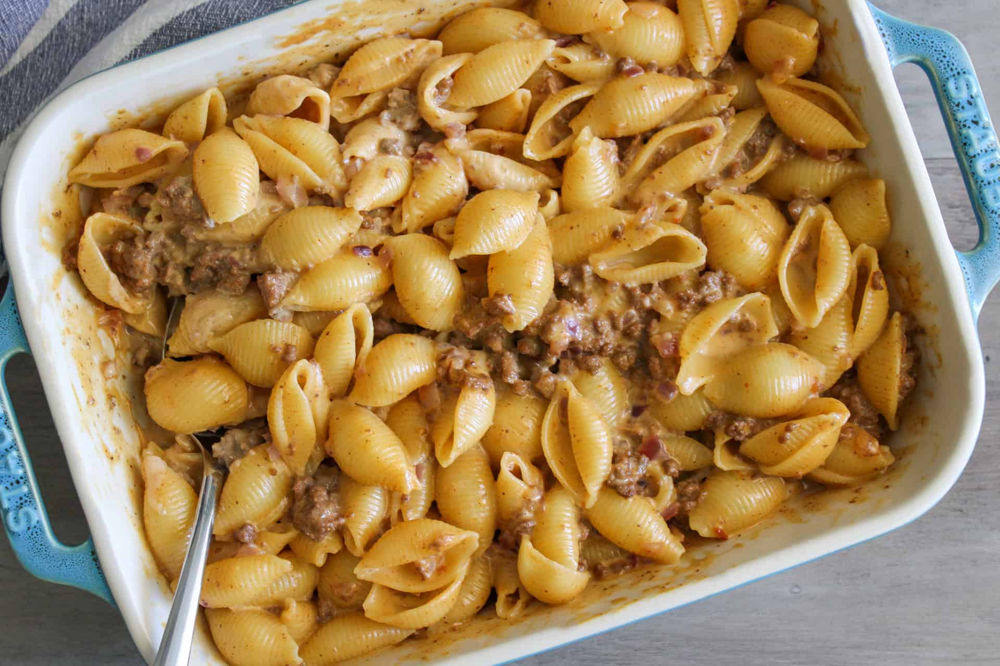

Mac & Cheese

Ingredients
- 2 boxes of shell pasta
- ranch
- carnation milk
- shredded cheese
- creole seasoning or whatever you prefer
- lime juice
Steps
- Fill a deep pan with water to about 3/4ths of the way
- Put about 3 table spoons of lime juice in the water and creole seasing
- Mix and set on the stove on maximum heat and wait for it to boil
- Once the water is boiling, carefully pour the two boxes of shells into the water
- Let the shells boil for 10 minutes or until cooked, mixing every 2 minutes to ensure the shells do not stick to the bottom of the pan
- After 10 minutes of boiling, strain the shells and run cold water over them, otherwise, they will continue to cook and get mushy
- Warm up left over groud turkey on the stove on low heat. Skip this step if you do not want to add ground turkey.
- Add cheese, carnation milk, and ranch and mix until all ingrediants are evenly distributed